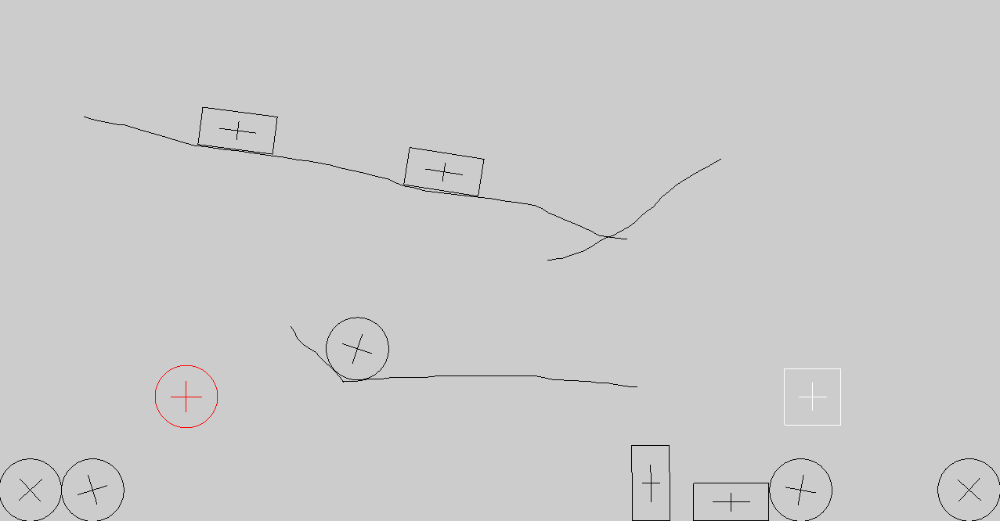
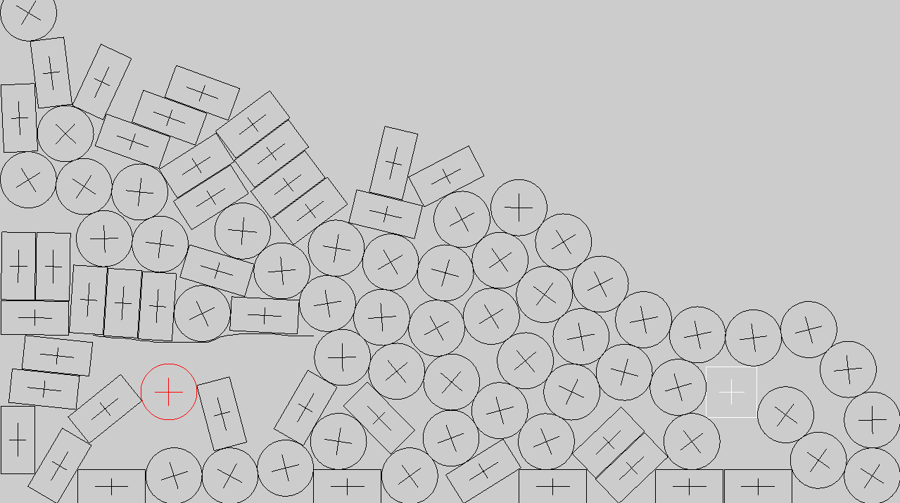

Pencil Physics
Description
The goal of this assignment was to learn how to create an interface between a graphics toolkit and other libraries, like a physics engine. This program allows the user to interactively manipulate objects on the screen that translate into force / constraints handled by the box2D engine. You can create circels, boxes, and lines. You can then drag your objects around and watch how they interact.
Code
Go to Github pageTools Used
- Modern OpenGL 3 for drawing and shading
- SDL2 for the windowing and user input
- Box2D for the physics engine
Features
- Interactive objects
- Movement and collision handled by the physics engine
Images:


